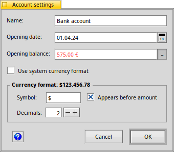
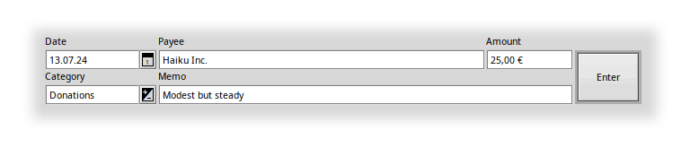
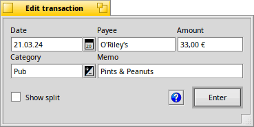
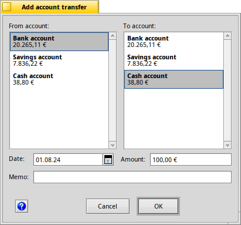

| Index |
|
Create/Open a ledger Create accounts Enter transactions ┗━ Split transactions Transfer between accounts Filtering the list |
CapitalBe's User Documentation
CapitalBe is an application to keep track of your personal finances. It lets you manage all the transactions of your accounts, create various reports and assists you drawing up a budget. It offers im- and export of files in the popular QIF format to share data with other finance software packages.
Quick start
Let's have a quick look at the main window before we go through a quick start, setting up accounts and doing some transactions.
- At the top left is a list of all your .
- Below that is a section to filter the list of transactions.
- Then comes a that shows the current balance of all accounts.
- To the right is a list of all .
- Below it follow the text boxes for the data entry for a new transaction that is created by hitting .
When you see a you can click it to get help on the related topic.
 Create/Open a ledger
Create/Open a ledger
When you launch CapitalBe for the first time, you're welcomed by a window given your two choices (besides …):
A "ledger" is a file where CapitalBe stores all accounts and transactions. If you already have a ledger file somewhere, you click to find and load it. opens a save dialog where you choose a location and filename for your new ledger.
CapitalBe used to work with only one file, ~/config/settings/CapitalBe/MyAccountData. If you've used CapitalBe before, that file is loaded automatically and you can just continue your bookkeeping as before.
Create accounts
After an empty ledger is created, you're prompted to set up an account. More accounts are added with the menu item .

First you your new account, here "Bank account".
By default, CapitalBe uses your system settings (configured with Haiku's Locale preferences) for the currency settings and formatting. If you have accounts that differ from that, you can untick the checkbox to see additional options:
You can choose a currency , decide to have it (otherwise it's shown after), and set the number of to use.
You see a preview of this custom setting as the bold label of this setting box.
In order to show transfers later on, let's create a second account named "Cash account".
 Enter transactions
Enter transactions
Now we start entering transactions, using those text boxed below the list of transactions.

Filling , and is mandatory, of course. Note, that you always enter positive amounts, the category decides if it will be added or substracted.
There are some features that help entering data.
- Use TAB to jump to the next text field, SHIFT TAB to go back to the previous one. ENTER completes the transaction.
- All entered categories and payees are saved and CapitalBe tries to auto-complete them while you are typing.
- When the date box has focus ↑/↓ in/decreases the day, SHIFT ↑/↓ in/decreases the month, and Page↑/Page↓ in/decreases the year.
- The little icon beside the date box opens a calendar window to conveniently choose a date.
- If your entered date lies in the future, the date box is marked with a red border/text, as that is normally not intentional.
- The little icon beside the category box opens a menu to choose from your categories.
- If there's a transaction that's very similar to an already existing one, right-click it and choose to fill the text fields of the new transaction with the data.
Normally you also enter a . If you don't, a little window pops up where you have to choose the type of transaction: or .
The field is not mandatory, but normally it makes sense to add a short description. The text is limited to 63 characters.
For this quick start example, we create a transaction to add an initial balance for our bank account:
| Date: | 01.01.2024 |
| Payee: | Init |
| Amount: | 1.200,00 € |
| Category: | We leave it empty and choose "Income" later in the pop-up window |
| Memo: | Initial balance |
If you need to edit a transaction, just double-click it and it opens in an editing window:

This is also how you enter a transaction for items with different categories: First enter a normal transaction, then edit it, and tick to create a "split transaction".
Split transactions
The normal transaction editing window gets extended to split the transaction into several categories:
With you split the transaction into one more category. removes the selected split-transaction. The adds up all the split-transactions. At the end it must be equal to the original at the top.
To have CapitalBe help with keeping the correct total over all splits, it's best to do it like this:
Select the top item in the list at the bottom – which is identical to the original transaction – and change the amount to what should be booked under the original category.
Click and a new item with the remaning amount is added to the list.
Choose a category for the new item and add some info in the memo text field.
Continue to split the transaction into more categories until you're satisfied.
Hit .
Transfer money between accounts

Let's put some money in our pocket by transfering some from the bank account to the cash account. For that, select the menu
It's pretty straight forward: select the source account from the list on the left and the destination on the right. Set the date, amount and optionally enter a memo.
After clicking you'll find the created transactions in the lists for those two accounts, substracting the amount from one, adding to the other.
Filtering the transaction list
You can filter the transaction list according to several criteria.
Choose the (e.g. , etc.) to limit the list to that time frame.
Enter a term in , or and only transactions containing those letters are shown.
You can set an and only transaction , or appear in the list.
or ALT L resets the filter.
starts the filtering, though you'll find that pressing TAB to jump to the next text field or choosing from the popup menus also triggers an update of the filtered list.
You can jump to the first filter text field — — with ALT F and continue to the next with TAB.
Right-click a transaction and choose or ALT U to insert its field into the filter.
This should be enough to get you started. The following pages describe more features, like settings, scheduled transactions and the tools "Report" and "Budget".
Next: Menus